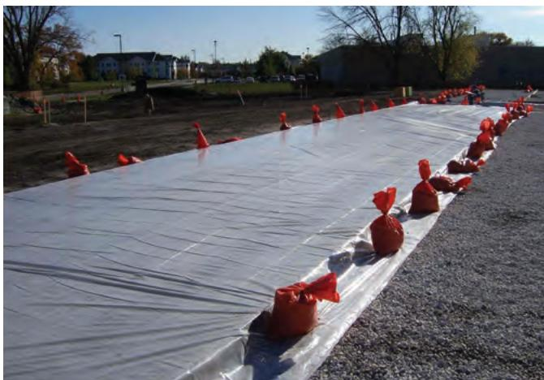
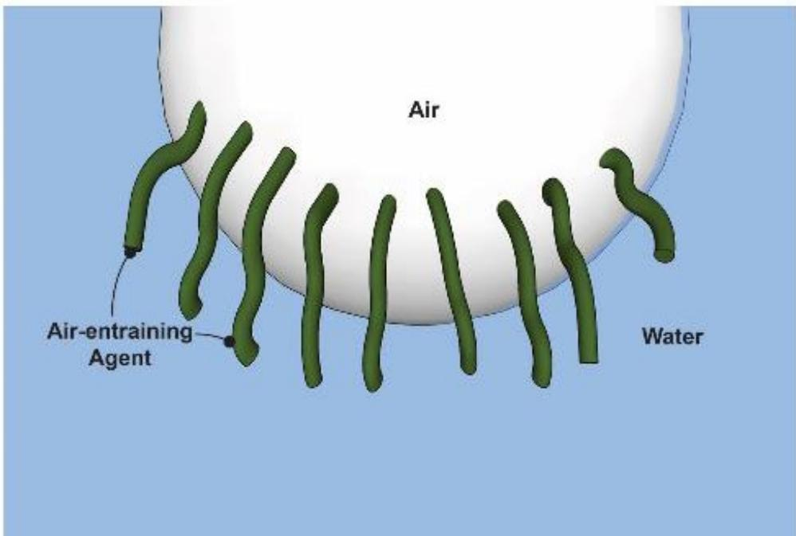
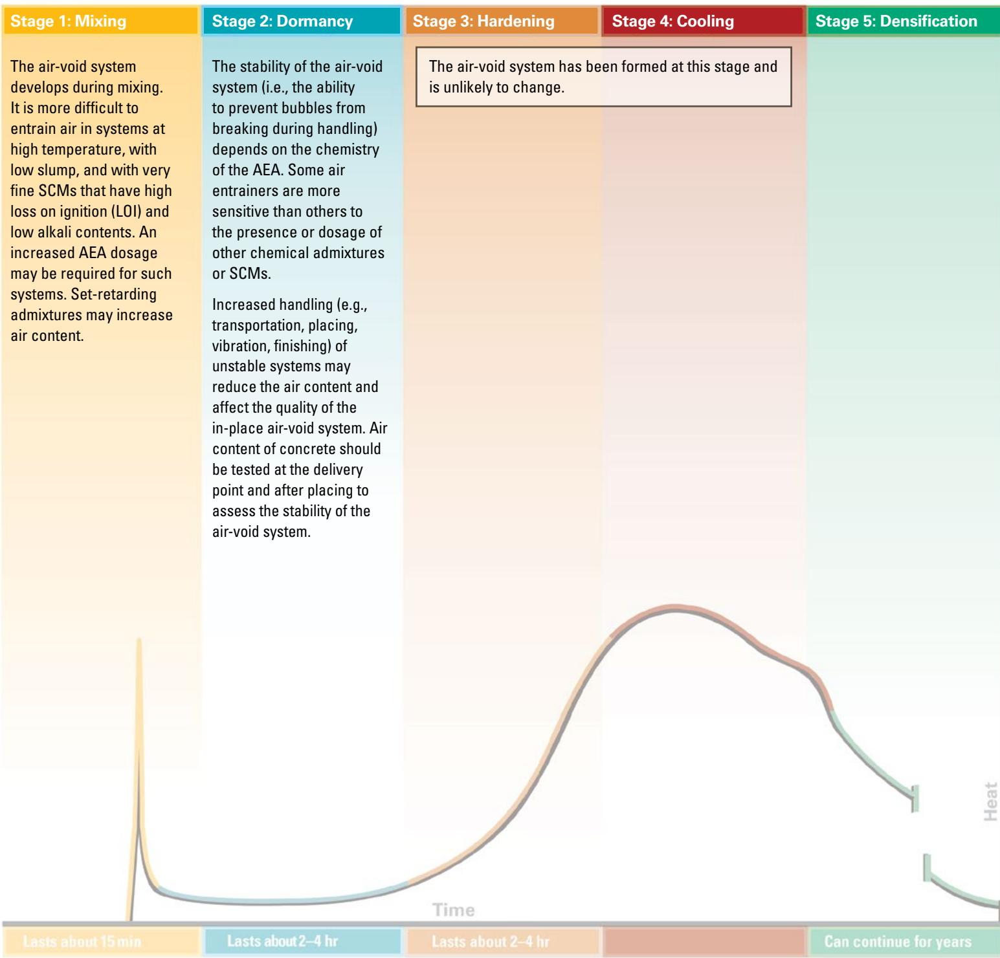
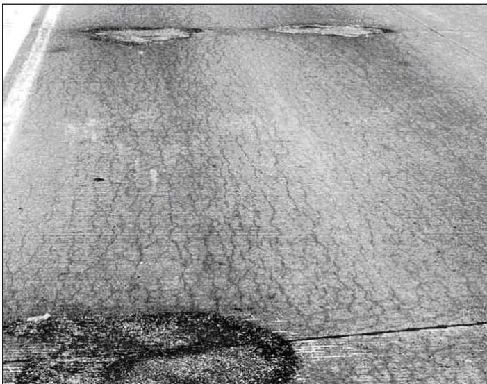
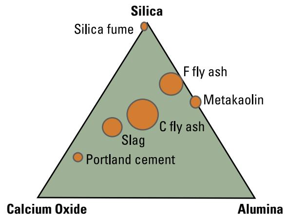
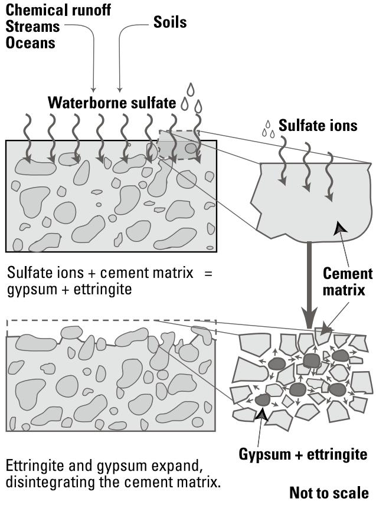

Concrete Mix Design and Durability Optimization
Concrete mix design and durability optimization is the systematic selection and proportioning of aggregates, cementitious binders (including Portland or blended cements), supplementary cementitious materials, water, chemical admixtures, and air‑entraining agents together with controlled curing and temperature management to produce a hardened paste that satisfies required strength, workability and long‑term performance [1][2][3]. By targeting a low water‑to‑cementitious material ratio (≈0.4 or lower), incorporating appropriate SCMs, and establishing a stable air‑void system, the mix attains a dense, low‑permeability matrix that directly limits fluid ingress, chloride penetration, sulfate attack, freeze‑thaw damage and related deterioration mechanisms [1][4][5]. The resulting concrete layer thus serves as a durable structural surface that maintains strength and serviceability throughout its service life while resisting physical and chemical attacks such as alkali‑aggregate reaction, sulfate attack, and frost damage, thereby reducing environmental impact and potentially lowering overall cost [1][6][7]
CP Tech Center Guides reports covering “Concrete Mix Design and Durability Optimization” also include the following subtopics: Aggregate Gradation and W/CM Ratio, Air Void Reduction and Chemical Agent Impact on Concrete Durability, Cement Content and Workability Optimization, Fiber-Enhanced Concrete Performance, and Supplementary Cementitious Materials'' Role in Workability and Strength.
Aggregate Gradation and W/CM Ratio provide the primary mix-design levers that dictate pavement behavior by maximizing particle packing and controlling paste film thickness. [1][2][12] Air Void Reduction and Chemical Agent Impact on Concrete Durability establishes a stable air-void network to accommodate freezing water, while Supplementary Cementitious Materials' Role in Workability and Strength modifies fresh flow and hardened strength through pozzolanic reactions. [2][7][13] Cement Content and Workability Optimization ensures the plastic mix remains cohesive for placement, and Fiber-Enhanced Concrete Performance improves overlay toughness by bridging cracks with discrete synthetic or steel fibers. [1][2][12]
Sources (13)
Sub-concepts (5)
Material purpose and applicability
Concrete mix design and durability optimization is the systematic selection and proportioning of aggregates, cementitious binders (including Portland cement or blended cements), supplementary cementitious materials such as fly ash, slag or silica fume, water, chemical admixtures, and air‑entraining agents, together with appropriate curing and temperature control, to produce a hardened paste that meets required strength, workability and long‑term performance. The guides define it as “systematic selection of material proportions—specifically controlling the water‑to‑cement ratio, incorporating supplementary cementitious materials, and ensuring proper air entrainment—to produce a hardened paste that can withstand physical and chemical attacks.” By targeting a “low water‑to‑cementitious material ratio near or below 0.4” (and not exceeding 0.45 in cold climates) and by providing an “appropriate entrapped‑air system,” the mix achieves low permeability, which “directly controls fluid ingress, chloride penetration, sulfate attack, frost damage and related mechanisms.” The statements that “SCMs generally improve potential concrete durability by reducing permeability” and that “Permeability is a direct measure of the potential durability of a concrete mixture” reinforce this approach. The resulting concrete layer “provides a durable concrete layer that maintains strength and serviceability throughout the pavement’s life while resisting chemical distress (e.g., alkali‑silica reaction or sulfate attack), reducing environmental impact, and potentially lowering cost.” It also “resists fluid ingress, freeze‑thaw damage, alkali‑aggregate reaction, and D‑cracking” through a controlled air‑void content. For slip‑formed pavements the mix is further validated by vibration‑response tests—“engineers develop a mix that delivers the durability, surface finish, and edge stability required for slip‑formed pavement”—ensuring edge stability during placement. Collectively, these actions establish the concrete as the structural surface of the pavement system, protecting it from moisture‑driven deterioration and extending its service life. [1][2][3][4][5][7][9][10][11][12]
The following figure illustrates proper curing techniques for pervious concrete using plastic sheeting.

Pervious concrete pavement curing with plastic sheeting and sandbags. [4]The image shows a long strip of translucent plastic sheeting laid over a paved surface, secured at the edges by orange sandbags to prevent wind displacement. This setup illustrates the recommended curing procedure for pervious concrete, which involves fog misting followed by plastic sheeting to retain moisture in the mix. Proper curing is critical for pervious concrete because its open structure and rough surface expose more cement paste area to evaporation than conventional concrete.
[1] — Ch. 3 (p. 19), Ch. 6 (p. 32); [2] — Ch. 3 (p. 81), Ch. 6 (pp. 193–194), Ch. 7 (pp. 210–218); [3] — Ch. 5 (pp. 178–179), App. F (pp. 469–470); [4] — Materials (pp. 22–23); [5] — Ch. 6 (pp. 63–64); [7] — Concrete Mixtures (p. 21); [9] — Ch. 6 (p. 59); [10] — Response to Vibration and Edge… (pp. 24–27); [11] — Mixture Design (pp. 20–21), Structural Design (p. 20); [12] — Ch. 7 (pp. 103–105)
Composition and characteristics
Concrete mix design for durability hinges on three primary constituents: a low water‑to‑cementitious material (w/c) ratio, the incorporation of supplementary cementitious materials (SCMs), and proper air entrainment to create protective voids. The guides define durability‑oriented concrete mix design as “a tightly controlled composition of cementitious and non‑cementitious constituents that together create a dense, low‑permeability matrix with a robust air‑void system.” The primary binder consists of Portland cement supplemented with carefully proportioned SCMs such as fly ash, slag cement, natural pozzolans, silica fume, or metakaolin. A low water‑to‑cementitious material ratio—typically 0.40 or below (0.38–0.42 in cold climates) and not exceeding 0.45 for trails—is maintained to promote high degree of hydration, strength development, and reduced pore connectivity. Air entrainment targeting about five percent air volume behind the paver (five to eight percent in cold climates) provides a protective void system that mitigates freeze‑thaw damage and salt scaling. Chemical admixtures, especially water‑reducing agents and air‑entraining agents, are dosed to preserve workability without increasing water content. Aggregates—well‑graded blends of coarse and fine particles selected and graded to meet design specifications while limiting maximum coarse size—form the skeletal framework; changes in aggregate source require a new mixture proportioning study. The resulting mix must exhibit consistent workability, adequate water relative to aggregate grading, resistance to segregation, edge slump no greater than about a quarter inch, surface void scores within acceptable limits, and a VKelly index between roughly 0.6 and 1.1 in./√?. For low‑density cellular concrete, the composition includes hydraulic cement, water, and preformed foam that generate a homogeneous network of macroscopic air cells, achieving an oven‑dry density at or below 50 lb/ft³ (800 kg/m³). Ternary mixtures may incorporate up to 10 % silica fume, ≤30 % Class F fly ash, up to 40 % Class C fly ash, and 15–50 % slag cement, allowing designers to meet limits on maximum w/c, air content, cement type, and chloride level for aggressive exposures. Across all variants, the water‑to‑cementitious material ratio governs permeability and long‑term strength, SCM dosage refines pore structure, and a stable air‑void or cell structure provides freeze‑thaw resistance. Proper curing, controlled finishing, and avoidance of excess water addition are essential to limit shrinkage, permeability, and maintain durability. [1][2][3][4][5][6][7][8][9][10][11][12]
The figure below illustrates how air-entraining admixture molecules stabilize the protective void system essential for durability.

Stabilization of air voids by air-entraining admixture molecules [6]The figure depicts a spherical air bubble at the interface between an “Air” phase and a “Water” phase. Green, rod-like molecules labeled as “Air-entraining Agent” are shown adsorbed onto the surface of the bubble with their hydrophilic heads in the water and hydrophobic tails facing the air.
[1] — Ch. 3 (p. 19); [2] — Ch. 3 (pp. 81–134), Ch. 6 (pp. 193–194), Ch. 7 (pp. 210–218), Ch. 9 (p. 275); [3] — Ch. 5 (pp. 178–179), App. F (pp. 469–470); [4] — Materials (pp. 22–23); [5] — Ch. 6 (pp. 63–64); [6] — Ch. 4 (p. 284); [7] — Concrete Mixtures (p. 21); [8] — Ch. 1 (p. 12); [9] — Ch. 6 (p. 59); [10] — Response to Vibration and Edge… (pp. 24–27); [11] — Incompatibility (pp. 11–12), Interactions (pp. 21–23), Mixture Design (pp. 20–21), SCM Percentage (p. 12), Structural Design (p. 20); [12] — Ch. 7 (pp. 69–115)
Variations in composition, source material, processing steps, or proportioning reverberate through every stage of a concrete mix—from fresh‑state workability to long‑term durability. The guides repeatedly note that “the key variables are w/c ratio, use of SCMs, and proper air entrainment,” and that any shift in these variables is reflected in slump, air‑void quality, permeability, and strength development.
A low water‑to‑cementitious material (w/cm) ratio remains the dominant lever. The manuals advise to “Design concrete with a low w/cm ratio (around 0.4 or lower)” and describe how “Higher w/cm ratios will result in increased workability but also lower strength and decreased long‑term pavement performance.” Reducing the ratio tightens the pore network, lowers permeability, and enhances resistance to freeze–thaw cycling, sulfate attack, and chloride ingress.
Supplementary cementitious materials (SCMs) are highlighted for their durability benefits. One source states “SCMs generally improve potential concrete durability by reducing permeability,” while another explains that “Supplementary cementitious materials (SCMs) are often used to replace a portion of portland cement to … mitigate materials‑related distress mechanisms such as ASR or sulfate attack.” However, the effect depends on quality and dosage; “In order for SCMs to improve durability, they must be of adequate quality and used in appropriate amounts,” and “Increasing SCM dosage will increase setting time,” sometimes leading to “rapid stiffening, sometimes accompanied by severely retarded set” when incompatible admixtures are present. Compatibility issues are warned: “Some combinations of normally acceptable materials may be incompatible.”
Air‑entrainment is equally critical. Proper air content (≈4.5 %–5 %) “generally provide adequate protection from freeze‑thaw conditions,” and the guides stress that “The key is obtaining a homogenous and stable air void or cell structure.” Insufficient or excessive air alters the joint environment: “The impact of both attack mechanisms is most detectable at the joint where the potential for exposure and entrapped water is the highest.”
Aggregate selection and source quality directly influence durability. The texts advise that “Aggregates strongly influence concrete’s fresh properties (particularly workability) and long‑term durability,” and that “Durable aggregates are critical and should be assessed for potential alkali reactivity and D‑cracking.” When recycled concrete aggregate is used, “permeability of RCA concrete is higher than that of conventional concrete because it contains higher total quantities of paste … which is more permeable than virgin aggregate,” while freeze‑thaw performance remains governed by the air‑void system: “Freeze‑thaw resistance of any mixture is governed by the air void system of the paste, both recycled and new.” Consequently, “Aggregate sources should be screened for both types of susceptibility” and ACR‑susceptible aggregates must be excluded.
Changes in material source trigger design reviews. The guides require that “requires a ‘new concrete mix’ if there is a ‘change in material sources’ or when admixtures … are added or deleted,” and note that “If an aggregate source is changed … a new mixture proportioning study is necessary because the physical properties of the mixture could also change.” Trial batching is mandated to verify set time and early strength whenever cement, fly ash, or other SCM brands differ.
Processing variations manifest quickly in fresh‑state tests. The manuals report that “Variations in the concrete’s constituent makeup, source material, or processing steps quickly become evident through workability problems detected by the VKelly test,” and that “The SAM is a convenient way to monitor the spacing factor in fresh concrete.” Early stiffening often tempts crews to add water: “Note: A common—but generally inappropriate—field response is to add water, increasing the initial slump to compensate for early stiffening,” yet “Adding water above the approved mixture design content … is detrimental to shrinkage, permeability, and strength.” Surface‑void scores and VKelly indices are used as acceptance criteria (“surface void score greater than 2” indicates unsuitability; “a VKelly index between 0.6 … and 1.1 … signals acceptable performance”).
Admixture dosage and chemistry further affect setting and workability. Low‑range water reducers can “shorten setting time dramatically,” while high‑calcium Class C fly ash may introduce excess C₃A, leading to “rapid stiffening or flash set especially when the mix is heated.” Thus, “Workability for the construction process … will be influenced by the type and dosage of SCMs but is primarily controlled by water content and admixture usage.”
In sum, across all guides, any alteration in composition, source, processing, or proportioning propagates through fresh‑state behavior, early‑age reactions, and hardened‑state performance. Controlling w/cm ratio, selecting compatible high‑quality SCMs, ensuring proper air entrainment, screening aggregates, and maintaining consistent material sources and mixing procedures are the shared practices required to achieve durable concrete pavements. [1][2][3][4][5][6][7][8][9][10][11][12]
[1] — Ch. 3 (p. 19), Ch. 6 (p. 32); [2] — Ch. 3 (pp. 81–134), Ch. 6 (pp. 193–194), Ch. 7 (pp. 210–218), Ch. 9 (pp. 275–279); [3] — Ch. 5 (pp. 178–179), App. F (pp. 469–470); [4] — Materials (pp. 22–23); [5] — Ch. 6 (pp. 63–64); [6] — Ch. 4 (p. 284); [7] — Concrete Mixtures (p. 21); [8] — Ch. 1 (p. 12); [9] — Ch. 6 (p. 59); [10] — Response to Vibration and Edge… (pp. 24–27); [11] — Extreme Weather (p. 23), Incompatibility (pp. 11–12), Interactions (pp. 21–23), Mixture Design (pp. 20–21), SCM Percentage (p. 12), Structural Design (p. 20); [12] — Ch. 7 (pp. 69–115)
Key material properties
The durability of a concrete mix is governed by an integrated set of physical, mechanical, chemical and thermal characteristics. Physically, the guides emphasize that “key variables are w/c ratio, use of SCMs, and proper air entrainment” and that “Permeability is a key physical property because limiting fluid ingress curtails the transport of aggressive agents that drive durability loss.” Additional physical controls include aggregate moisture, total water content, concrete temperature, and fine particle spacing (“Aggregate moisture(s).”, “Air content.”, “Concrete temperature.”, “Total water content of the mixture.”, “Spacing factors should be less than 0.2 mm (0.008 in.).”). Mechanically, workability must meet uniformity limits (“Workability, governed mainly by water content and admixture dosage, must meet construction uniformity limits; it is also linked to the stability of the air‑void system, which influences long‑term durability.”) and be verified by slump and vibration criteria (“Edge slump greater than 0.25 in. indicates that the mixture may not be appropriate for slipform placement.”; “A surface void score greater than 2 indicates that the mixture may not be appropriate for slipform placement.”; “Current experience indicates that a VKelly index between 0.6 in. … and 1.1 in./√?? is appropriate for mixtures that will be slipformed.”). Early setting and strength development are governed by SCM type and temperature (“Setting time is highly sensitive to the type and amount of supplementary cementitious materials (SCMs) and ambient weather, affecting early‑age strength gain, cracking risk and finishing operations.”) while long‑term mechanical performance is described as “Mechanical attributes such as the rate of concrete strength development, long‑term strength, stiffness and creep determine structural capacity and influence crack susceptibility under moisture and thermal gradients.” with a typical target of “28-day compressive strength of 4,000 psi”. Chemically, supplementary cementitious materials are highlighted for their durability benefits (“SCMs generally improve potential concrete durability by reducing permeability.”; “With adequate curing, fly ash, slag cement, and natural pozzolans generally reduce the permeability and absorption of concrete.”) and the air‑void system is noted as “critical for durability, influencing resistance to salt scaling, freeze‑thaw damage, and overall strength.” Chemical balance considerations are captured in “Chemical balance—particularly the proportion of tricalcium aluminate (C₃A) relative to available sulfates—and the chemistry and dosage of SCMs control hydration rates, rapid stiffening or flash set, and overall durability.” with specific attention to alkali‑aggregate reaction (“Alkali aggregate reaction is a slow expansive reaction between certain aggregates and alkali hydroxides in the paste that leads to cracking in the concrete.”) and material selection (“The cementitious materials are selected to meet any special requirements, like sulfate resistance, ASR, or low‑heat requirements.”). Thermally, temperature influences compatibility and hydration (“Some incompatibility problems can be exacerbated with increasing temperatures.”; “Semi‑adiabatic calorimetry … heat signature plots (time‑temperature curves).”) and freeze‑thaw exposure (“exposure to freeze‑thaw cycles and deicers”). The risk of D‑cracking is described as “D-Cracking is a form of aggregate distress in which water is readily absorbed into aggregate particles with critically sized pore structures, and subsequently freezes and expands before it can be expelled from the pores.” Together these physical, mechanical, chemical and thermal properties define mix design strategies that optimize durability. [1][2][3][4][5][6][7][8][9][10][11][12]
The following figure illustrates how cement hydration processes directly influence these hardened concrete properties.

Implications of Cement Hydration for Hardened Concrete Properties [2]The figure illustrates the five stages of cement hydration—Mixing, Dormancy, Hardening, Cooling, and Densification—mapped against a heat evolution curve over time.
[1] — Ch. 3 (p. 19); [2] — Ch. 3 (pp. 81–134), Ch. 6 (pp. 184–194), Ch. 7 (pp. 210–218), Ch. 9 (p. 275); [3] — Ch. 5 (pp. 178–179), App. F (pp. 469–470); [4] — Materials (pp. 22–23); [5] — Ch. 6 (pp. 63–64); [6] — Ch. 4 (p. 284); [7] — Concrete Mixtures (p. 21); [8] — Ch. 1 (p. 12); [9] — Ch. 6 (p. 59); [10] — Response to Vibration and Edge… (pp. 24–27); [11] — Extreme Weather (p. 23), Incompatibility (pp. 11–12), Mixture Design (pp. 20–21), SCM Percentage (p. 12), Structural Design (p. 20); [12] — Ch. 7 (pp. 69–115)
The durability of concrete mixes is quantified through a set of measurable parameters that are repeatedly referenced across the guides. The primary ratio “the w/cm ratio is a key parameter affecting the workability, strength, permeability, and durability of concrete overlays” and “Typical water-to-cementitious materials (w/cm) ratios for normal concrete paving mixtures range from 0.40 to 0.45.” this ratio, together with “key variables are w/c ratio, use of SCMs, and proper air entrainment,” governs the mix’s resistance to physical and chemical attack (“The hardened cement paste is susceptible to both physical and chemical attack mechanisms”). Supplementary cementitious materials (SCMs) such as fly ash, slag, silica fume or metakaolin are identified for their ability to lower permeability (“Fly ash, slag cement, and natural pozzolans generally reduce the permeability and absorption of concrete”; “Silica fume and metakaolin are especially effective and can provide concrete with very low chloride penetration”). Air‑entraining admixtures create an air‑void system required for freeze–thaw durability (“Air‑entraining admixtures are used to develop an air void system that is necessary for concrete durability, particularly in freeze‑thaw environments”; “Freeze‑thaw resistance of any mixture is governed by the air void system of the paste”).
Mixes are classified by designated types and exposure categories. Standard specifications call for “Class C mixes are often specified” while higher‑durability projects require “C‑SUD/CV‑SUD mix is specified.” Structural design codes further classify aggressive environments (“Durability classification follows “Structural design codes (ACI 318) classify aggressive environments in terms of exposure to freezing and thawing, sulfates, corrosion, or aggressive fluids,” imposing limits on w/cm ratio, air content, cement type, and chloride content.”).
Laboratory and field tests provide the quantitative basis for these classifications. Permeability is measured directly (“Permeability is a measure of the system to resist penetration of fluids”) and indirectly through “permeability drops when the amount of hydrated cementitious material rises and when the water‑to‑cementitious material ratio is lowered.” Chloride ingress is evaluated alongside permeability, with low w/c mixes required for sulfate resistance (“low w/c ratios (≈0.4 or less) are required for sulfate‑resistant mixes”). Early‑age hydration is monitored by calorimetry: “The results of this test are heat signature plots (time‑temperature curves).” and “the shape of a heat of hydration plot measured using an isothermal or semi‑adiabatic calorimeter.” Setting time and early strength are obtained from trial batching (“contractors must conduct trial batching to determine the set time and early strength of their cementitious materials.”). Fresh‑state workability is assessed by slump testing, with “Test results that vary by more than 2 in. from sample to sample may indicate material and/or process control deficiencies,” and by mortar flow tests that reveal water content or temperature variations. The “Box Test involves vibrating a concrete sample in a 1 ft3 mold for 6 seconds at 12,000 vibrations per minute (vpm).” Edge‑slump and surface‑void limits (“Edge slump greater than 0.25 in. indicates that the mixture may not be appropriate for slipform placement.”; “A surface void score greater than 2 indicates that the mixture may not be appropriate for slipform placement.”) determine suitability for slip‑form placement. Vibration response is also quantified by the VKelly index (“Current experience indicates that a VKelly index between 0.6 … and 1.1 … is appropriate for mixtures that will be slipformed”). Air content is continuously monitored (“Air content should be monitored regularly during paving (minimum one test every 500 yd3).”) and bubble spacing verified with an AVA device (“the use of an AVA is recommended for quality control purposes for Level A projects to be sure that proper bubble spacing and bubble size are present.”). The SAM provides a rapid assessment of the air‑void system (“The SAM is a convenient way to monitor the spacing factor in fresh concrete.”) and spacing factors must remain below “Spacing factors should be less than 0.2 mm (0.008 in.).”
Cold‑climate specifications also call for “air content of 5% to 8% is recommended” and “Target air content—5 percent air volume behind the paver is recommended in cold climates.” Lower water‑cementitious materials ratio will lead to lower conductivity (“Lower water‑cementitious materials ratio will lead to lower conductivity.”).
Aggregate quality is screened for durability concerns: “Aggregates that fail these screenings are either excluded (as with ACR‑prone material) or treated according to the prescribed mitigation measures,” with specific protocols such as “The AASHTO R 80 protocol can assess the risk of ASR for a given set of materials” and “The risk of AAR should be addressed through the application of the AASHTO PP 80 protocols.” Freeze‑thaw performance is further evaluated by hardened‑air‑void analysis (“The air void system of the source concrete can be assessed using a hardened air void analysis before crushing”). Strength targets are expressed as compressive strength limits, for example “28‑day compressive strength of 4,000 psi” and “rate of concrete strength development” is linked to w/c ratio and SCM dosage.
Together, these measurements, characterizations, and classifications form the comprehensive framework used across the guides to evaluate and optimize concrete mix design for durability. [1][2][3][4][5][6][7][9][10][11][12]
The figure below illustrates how mixture verification is integrated with combined gradation analysis to support this optimization framework.
 Mixture verification combined gradation analysis [12]
Mixture verification combined gradation analysis [12]
The figure displays a scatter plot comparing the coarseness factor and workability factor of fresh concrete mixtures against allowable project tolerance limits. This analysis supports the systematic selection and proportioning of aggregates to produce a hardened paste that satisfies required workability, which is essential for optimizing concrete durability.
[1] — Ch. 3 (p. 19), Ch. 6 (p. 32); [2] — Ch. 3 (pp. 81–133), Ch. 6 (pp. 193–194), Ch. 7 (pp. 210–218), Ch. 9 (pp. 275–279); [3] — Ch. 5 (pp. 178–179), App. F (pp. 469–470); [4] — Materials (pp. 22–23); [5] — Ch. 6 (pp. 63–64); [6] — Ch. 4 (p. 284); [7] — Concrete Mixtures (p. 21); [9] — Ch. 6 (p. 59); [10] — Response to Vibration and Edge… (pp. 24–27); [11] — Extreme Weather (p. 23), Incompatibility (pp. 11–12), Mixture Design (pp. 20–21), SCM Percentage (p. 12), Structural Design (p. 20); [12] — Ch. 7 (pp. 69–105)
Behavior and mechanisms
The concrete mix, when proportioned for its service environment, exhibits a coordinated response to mechanical, moisture, thermal, and chemical stresses. A low water‑to‑cementitious material ratio combined with supplementary cementitious materials produces a dense, well‑hydrated matrix that curtails the movement of fluids; this limits moisture ingress, freeze–thaw damage, and aggressive ion transport, thereby protecting both the paste and embedded reinforcement. The resulting reduced pore connectivity also contributes to higher compressive strength and stiffness, enabling the material to sustain service loads with limited deformation or cracking. An engineered air‑void system created by air‑entraining admixtures supplies microscopic cavities that accommodate ice expansion, mitigating internal cracking during temperature cycling and preserving durability in cold climates. Adequate air entrainment together with low w/c ratios further reduces permeability, providing space for ice expansion and limiting damage from temperature fluctuations and chemical exposure. Because permeability is the primary indicator of durability potential, maintaining a low w/c ratio and appropriate SCM dosage controls the pore structure, which in turn governs resistance to chloride, sulfate, and carbonation attack as well as to alkali‑aggregate reactions. When temperatures rise, excessive water addition to regain workability can raise the w/c ratio and compromise the air‑void system; conversely, controlling mix temperature and using compatible admixtures prevents rapid stiffening or retarded set that would otherwise degrade workability and durability. Overall, the integrated effect of low w/c ratios, SCMs, and a proper air‑void structure enables concrete to resist mechanical loading while remaining resilient to moisture variations, thermal cycles, and chemical aggressors. [1][2][4][5][6][7][9][10][11][12]
The following figure illustrates a conceptual model that explains how sorption mechanisms influence freeze-thaw behavior in concrete.
 A conceptual illustration of the sorption-based freezethaw model showing degree of saturation over time. [1]
A conceptual illustration of the sorption-based freezethaw model showing degree of saturation over time. [1]
The figure plots the Degree of Saturation against the square root of Time, illustrating a two-stage absorption process where an initial rapid uptake (blue line) transitions into slower secondary sorptivity (red line). A yellow region labeled “Critically Saturated” indicates the threshold above which freeze-thaw damage occurs, with a dashed line marking this critical limit. The model demonstrates how mix properties influence durability: curves for higher w/c ratios reach the critical saturation faster than lower w/c ratios, while arrows indicate that a lower volume of air results in steeper initial absorption compared to a higher volume of air. This model predicts the time required for concrete to reach “critical DOS” after exposure to water, which is assumed to be the point where freeze-thaw damage occurs.
[1] — Ch. 3 (p. 19); [2] — Ch. 3 (pp. 81–133), Ch. 6 (pp. 184–194), Ch. 7 (p. 218); [4] — Materials (pp. 22–23); [5] — Ch. 6 (pp. 63–64); [6] — Ch. 4 (p. 284); [7] — Concrete Mixtures (p. 21); [9] — Ch. 6 (p. 59); [10] — Response to Vibration and Edge… (pp. 24–27); [11] — Extreme Weather (p. 23), Incompatibility (pp. 11–12), Mixture Design (pp. 20–21), Structural Design (p. 20); [12] — Ch. 7 (pp. 69–105)
Durability and deterioration
Concrete mix design must confront a suite of deterioration mechanisms that arise from both physical and chemical actions on the hardened cement paste and from the ingress of aggressive fluids. “Almost all durability‑related failure mechanisms involve the movement of fluids through the concrete,” so permeability—directly governed by the water‑to‑cementitious material (w/c) ratio, degree of hydration, and supplementary cementitious materials (SCMs)—is a primary durability indicator. “Permeability is a direct measure of the potential durability of a concrete mixture.” High w/c ratios, excess paste from recycled aggregates, or incompatibilities among cement, SCMs, admixtures, and aggregates enlarge capillary pores and create pathways for water, chlorides, sulfates, alkalis, and carbon dioxide. The resulting fluid ingress promotes freeze‑thaw damage (especially where deicing chemicals are present), sulfate attack, chloride‑induced reinforcement corrosion, alkali‑aggregate reactions (ASR) and related expansive cracking, D‑cracking of porous aggregates, and physical salt crystallization at wetting/drying fronts. Inadequate air‑void systems further amplify freeze‑thaw susceptibility, while rapid stiffening, false set, or delayed setting caused by material incompatibility compromise consolidation and increase local w/c ratios. To mitigate these interrelated damage processes the guides stress low w/c ratios (≈0.38–0.45), judicious use of SCMs to lower permeability and C₃A content, proper air‑entrainment, compatible material selection, and controlled curing. “mitigate materials‑related distress mechanisms such as ASR or sulfate attack” through strict SCM content limits and screening of aggregates for expansion potential. [1][2][3][4][5][6][7][9][11][12]
The following figure illustrates how a deficient air-void system can lead to freeze-thaw damage.

Photograph of a concrete pavement surface exhibiting severe scaling and deterioration. [12]The image displays a concrete pavement surface characterized by extensive map cracking and significant material loss, particularly around the joints at the top of the frame. This deterioration is identified as freeze-thaw damage resulting from an inadequate air-void system, where entrained air bubbles are not properly distributed to protect the pavement. This figure illustrates a critical aspect of concrete mix design optimization, demonstrating how proper air entrainment is necessary to produce a dense matrix that resists physical attacks like freeze-thaw damage.
[1] — Ch. 3 (p. 19); [2] — Ch. 3 (pp. 81–134), Ch. 6 (pp. 184–194), Ch. 7 (pp. 210–218), Ch. 8 (p. 243); [3] — Ch. 5 (pp. 178–179), App. F (pp. 469–470); [4] — Materials (pp. 22–23); [5] — Ch. 6 (pp. 63–64); [6] — Ch. 4 (p. 284); [7] — Concrete Mixtures (p. 21); [9] — Ch. 6 (p. 59); [11] — Incompatibility (pp. 11–12), Mixture Design (pp. 20–21), Structural Design (p. 20); [12] — Ch. 7 (pp. 69–115)
Material interactions and compatibility
The guides agree that durability‑focused concrete mix design is governed by the water‑to‑cementitious material (w/cm) ratio and the interaction of binder, supplementary cementitious materials, admixtures, and aggregates. “Durability‑focused mix design controls concrete’s interaction with its constituents by limiting pathways for aggressive agents; a lower water‑to‑cementitious material ratio densifies the paste, while supplementary cementitious materials at proper dosages refine pore structure and enhance resistance to chemical attack.” A lower w/cm ratio densifies the paste, reduces permeability, and limits pathways for aggressive agents, while well‑graded aggregates control workability and paste demand. “Supplementary cementitious materials (SCMs) are often used to replace a portion of portland cement to … mitigate materials-related distress mechanisms such as ASR or sulfate attack”. SCMs such as fly ash, slag, silica fume or metakaolin replace part of the Portland cement, lowering effective alkalinity and improving resistance to chemical attack and ASR. “The compatibility of materials in concrete pavements is important because it will affect long‑term pavement performance.” Compatibility among all constituents is essential; chemical incompatibilities can cause premature stiffening, false set, or altered setting times, and changes in aggregate moisture or source require re‑evaluation of mix proportions. “If an aggregate source is changed by the supplier (or contractor) a new mixture proportioning study is necessary because the physical properties of the mixture could also change.” Air‑entrainment, admixture dosage, and temperature management further influence the binder‑aggregate bond and long‑term performance. [1][2][3][4][5][6][7][9][10][11][12]
The figure below illustrates the basic chemical composition of various supplementary cementitious materials in comparison to portland cement.

Ternary diagram illustrating the basic chemical composition of various SCMs compared to portland cement [2]The figure displays a ternary plot with vertices representing Silica, Calcium Oxide, and Alumina. It plots the relative chemical composition of Portland cement alongside various supplementary cementitious materials (SCMs) including slag, fly ash, metakaolin, and silica fume.
[1] — Ch. 3 (p. 19); [2] — Ch. 3 (pp. 81–134), Ch. 6 (pp. 184–194), Ch. 7 (pp. 210–218); [3] — Ch. 5 (pp. 178–179), App. F (pp. 469–470); [4] — Materials (pp. 22–23); [5] — Ch. 6 (pp. 63–64); [6] — Ch. 4 (p. 284); [7] — Concrete Mixtures (p. 21); [9] — Ch. 6 (p. 59); [10] — Response to Vibration and Edge… (pp. 24–27); [11] — Incompatibility (pp. 11–12), Interactions (pp. 21–23), Structural Design (p. 20); [12] — Ch. 7 (pp. 69–115)
The guides identify several chemical and physical incompatibilities that can compromise durability. Excess calcium sulfate in the mix may precipitate as gypsum, producing a temporary stiffening known as false set, while dissolved sulfates attack aluminate phases. Alkalis present in solution promote alkali‑aggregate reactions, including ASR, especially when reactive aggregates are used or when recycled concrete aggregate exposes fresh aggregate faces. Oxygen combined with moisture accelerates reinforcement corrosion. In environments where the sulfate balance is disturbed—such as by high‑calcium Class C fly ash that adds extra C₃A—the risk of rapid stiffening or flash set increases, particularly at elevated temperatures and with lignin‑based water reducers. The guides also note that slabs on grade are especially vulnerable to shrinkage and thermal stresses because of their high surface‑to‑volume ratio, raising the likelihood of random cracking. Mitigation strategies emphasized across sources include maintaining a low water‑to‑cementitious material ratio, selecting sulfate‑resistant cement types or using sufficient supplementary cementitious materials, employing aggregates proven resistant to alkali reactivity and D‑cracking, and conducting trial batching with monitoring of slump loss, setting time, and early strength development. The guides do not discuss compatibility issues related to organics, clays, other contaminants, or dissimilar material interfaces, implying those factors lie outside the presented evidence. [2][3][5][7][11]
The figure below illustrates how sulfate attack chemically degrades cement paste, leading to the surface softening described.

Diagram illustrating the mechanism of sulfate attack on concrete. [2]The figure depicts waterborne sulfates infiltrating a cement matrix containing aggregate particles, leading to chemical reactions that form gypsum and ettringite. These expansive reaction products disrupt the internal structure of the concrete, causing disintegration of the cement paste. This process demonstrates a specific durability failure mechanism that is mitigated by optimizing mix design parameters such as reducing permeability.
[2] — Ch. 3 (p. 134), Ch. 6 (pp. 184–194), Ch. 7 (p. 218); [3] — Ch. 5 (pp. 178–179); [5] — Ch. 6 (pp. 63–64); [7] — Concrete Mixtures (p. 21); [11] — Incompatibility (pp. 11–12), Mixture Design (pp. 20–21), Structural Design (p. 20)
Influence of production and placement
Mixing establishes the water content, admixture dosage and SCM proportions that dominate workability, permeability and early strength development; “Mixing choices that keep the water‑to‑cementitious material ratio low—by adding appropriate amounts of supplementary cementitious materials, selecting a well‑graded aggregate blend and employing water‑reducing admixtures—enhance workability while simultaneously increasing strength, lowering permeability and improving durability of concrete overlays.” The guides warn that “Incompatibility is important because small changes in the chemistry of materials, or even in temperature, can make a mixture acceptable in one batch of concrete behave in an unacceptable manner in the next batch, causing problems in placing, compacting, or finishing that are often perceived to be unpredictable and uncontrollable.” Accordingly, “Mixing time, concrete temperature, and water content directly control slump consistency and early stiffening” and “Excessive early stiffening can be mitigated by lowering the mix temperature, but adding extra water beyond the designed amount compromises durability.” Properly timed mixing also governs total water, air content, and aggregate moisture, which together dictate workability and long‑term performance.
Placement and compaction must preserve the intended w/cm ratio and eliminate voids. The guides state that “Proper placement and vibration are required to achieve full consolidation; inadequate compaction leaves internal voids and segregation that weaken the hardened matrix.” For slip‑form operations, “Edge slump greater than 0.25 in. indicates that the mixture may not be appropriate for slipform placement,” and “A surface void score greater than 2 indicates that the mixture may not be appropriate for slipform placement.” Acceptable vibration response is confirmed when “Current experience indicates that a VKelly index between 0.6 … and 1.1 … is appropriate for mixtures that will be slipformed.” Monitoring during placement, such as “daily air testing behind the paver,” helps ensure intended air levels; segregation “increases permeability, allowing harmful fluids to infiltrate the concrete matrix.” A quantity adjustment should correct a mixture for ease of placement, to improve consolidation, to control finishing effort, to reduce edge slump or to reduce risk of segregation.
Finishing practices influence surface integrity. The guides advise that “Finishing should be restrained—excess hand or mechanical finishing and added water disturb the surface layer, creating voids and higher paste content that reduce long‑term performance” and that “Finishing too early while excess bleed water is present raises surface permeability, undermining the low‑permeability design of the mix.” Additionally, “Finishing influences setting time and cracking risk.”
Curing is identified as the most decisive factor for durability. The guides emphasize that “Curing is the most decisive factor for durability: maintaining moisture during early ages allows supplementary cementitious materials such as fly ash, slag cement, and natural pozzolans to develop a denser matrix that lowers permeability and absorption, while extended wet curing promotes greater strength development and further reduces permeability, enhancing resistance to sulfate attack.” Proper curing also “lowers concrete conductivity, helping the hardened material retain its designed low‑permeability characteristics and enhancing overall resistance to fluid ingress and environmental attack.” Temperature effects are noted: “Curing temperature is a key practical factor; laboratory work showed that ternary mixtures prepared and cured at both 50 °F and 100 °F still achieved satisfactory performance,” and “Temperature control during mixing and early curing also matters; high temperatures may prompt extra water addition that raises the ratio and degrades performance, whereas in cooler conditions SCMs help maintain set time without sacrificing the low‑ratio benefits.”
Collectively, disciplined control of mixing chemistry, careful placement and vibration, limited finishing intervention, and sustained moist curing produce low‑permeability, high‑strength concrete optimized for durability. [2][3][9][10][11][12]
[2] — Ch. 3 (pp. 81–134), Ch. 6 (pp. 193–194), Ch. 7 (p. 218), Ch. 8 (p. 243), Ch. 9 (p. 275); [3] — Ch. 5 (pp. 178–179), App. F (pp. 469–470); [9] — Ch. 6 (p. 59); [10] — Response to Vibration and Edge… (pp. 24–27); [11] — Extreme Weather (p. 23), Mixture Design (pp. 20–21); [12] — Ch. 7 (pp. 69–105)
The guides identify a consistent set of construction‑stage variations that dominate the long‑term behavior of concrete mixes. First, any deviation that moves the water‑to‑cementitious material ratio outside approved limits—whether it is an “improper water‑to‑cement ratio”, “Using a high water‑to‑cementitious material ratio”, or the addition of extra water to regain workability (“Adding water above the approved mixture design content to overcome early stiffening is detrimental to shrinkage, permeability, and strength; thus, it should be avoided whenever possible.”) – raises permeability and reduces strength, as noted that “higher w/cm ratios will result in increased workability but also lower strength and decreased long‑term pavement performance.”
Second, the integrity of the air‑void system is repeatedly emphasized: “insufficient air entrainment”, “The air‑void structure must be preserved; disruption during transport and handling through the paver alters the intended void pattern and reduces freeze‑thaw resistance,” “instability of the air void system,” and the observation that “Air content can be affected by many factors, ranging from cement and admixture chemistry to mixing time and aggregate grading” all point to the need for a “proper air‑void system” to achieve durable performance.
Third, the use of supplementary cementitious materials must be controlled: “omission or incorrect use of supplementary cementitious materials,” “low‑quality or improperly proportioned supplementary cementitious materials (SCMs),” and the statements that “SCMs generally improve potential concrete durability by reducing permeability.” and “In order for SCMs to improve durability, they must be of adequate quality and used in appropriate amounts.” Moreover, “changes in the type or amount of supplementary cementitious materials … create incompatibilities that alter fresh‑concrete properties such as slump loss, set time, and early strength gain.”
Fourth, aggregate selection is a critical source of defect: “poorly graded or incompatible aggregates,” “Durable aggregates are critical and should be assessed for potential alkali‑reactivity and D‑cracking,” and the warning that “Using aggregates that expand under freeze‑thaw cycles (D‑cracking) or that are prone to alkali‑aggregate reaction introduces expansion stresses.” When an aggregate source is altered, “a new mixture proportioning study is necessary because the physical properties of the mixture could also change.”
Fifth, material incompatibilities and chemical imbalances can cause premature stiffening or false set: “Some combinations of normally acceptable materials may be incompatible,” “Excess calcium sulfate in solution … causing temporary stiffening of the mixture, or false set,” as well as “rapid stiffening” and “flash set” reported for ternary mixes.
Sixth, handling and finishing practices introduce further defects: “over‑finishing, addition of surface water,” “Headers (transverse construction joints) are one of the most consistent contributors to the roughness of concrete pavement,” “Edge slump greater than 0.25 in. indicates that the mixture may not be appropriate for slipform placement,” and “A surface‑void score above 2 indicates a porous finish prone to moisture ingress.” Segregation (“Segregation during stockpiling”), inadequate curing, and poor consolidation are also highlighted: “Inadequate curing fails to close permeable pores,” “Premature final finishing when excessive bleed water is present will increase surface permeability,” and “Both inadequate consolidation and over‑vibration can leave a concrete pavement vulnerable.”
Collectively, these construction‑introduced variations—excess water ratios, compromised air voids, uncontrolled SCM use, unsuitable aggregates, chemical incompatibilities, and poor placement or curing practices—are identified across the guides as the primary defects that dictate the long‑term durability of concrete mixes. [1][2][3][4][5][6][7][9][10][11][12]
The figure below illustrates a common manifestation of these durability issues by showing how air voids tend to cluster around aggregate particles.
 Micrograph showing air void clustering around a coarse aggregate particle. [2]
Micrograph showing air void clustering around a coarse aggregate particle. [2]
The image displays a cross-section of hardened concrete where a large, reddish-brown aggregate particle is surrounded by a dense concentration of small, circular air voids within the cement paste matrix. This phenomenon represents an incompatibility in the air-void system known as clustering, which results in reduced strength and increased permeability.
[1] — Ch. 3 (p. 19); [2] — Ch. 3 (pp. 81–134), Ch. 6 (pp. 193–194), Ch. 7 (p. 218), Ch. 8 (p. 243), Ch. 9 (pp. 275–279); [3] — Ch. 5 (pp. 178–179), App. F (pp. 469–470); [4] — Materials (pp. 22–23); [5] — Ch. 6 (pp. 63–64); [6] — Ch. 4 (p. 284); [7] — Concrete Mixtures (p. 21); [9] — Ch. 6 (p. 59); [10] — Response to Vibration and Edge… (pp. 24–27); [11] — Extreme Weather (p. 23), Incompatibility (pp. 11–12), Mixture Design (pp. 20–21), Structural Design (p. 20); [12] — Ch. 7 (pp. 69–115)
Selection, specification, and improvement
The selection of a concrete mix for durability is driven first by the performance requirements for both fresh and hardened concrete and by the anticipated exposure conditions such as freeze‑thaw cycling, deicing chemicals, chlorides, sulfates, alkali‑aggregate reaction (ASR) or acid‑carbonate reaction (ACR). Across the guides the fundamental variables that must be controlled are the water‑to‑cementitious material ratio, the type and dosage of supplementary cementitious materials (SCMs), and the air‑void system. The guides state “the key variables are w/c ratio, use of SCMs, and proper air entrainment”. Low permeability is achieved by minimizing the w/cm ratio; as one source notes, “permeability of concrete decreases as the quantity of hydrated cementitious materials increases and the water‑to‑cementitious materials (w/cm) ratio decreases”. SCM selection is linked to the aggressive agents expected—fly ash, slag, silica fume or metakaolin are chosen for sulfate, chloride or ASR mitigation—and must be of adequate quality. Chemical compatibility among cement, SCMs and admixtures is required because “Some combinations of normally acceptable materials may be incompatible” and “Incompatibility is a phenomenon sometimes observed in which ingredients in a mixture under some conditions react with each other to result in undesirable and unpredictable behavior.” Air‑entraining admixtures are used to develop an air‑void system; “Air‑entraining admixtures are used to develop an air void system that is necessary for concrete durability, particularly in freeze‑thaw environments,” and the required air content varies with climate (e.g., 4.5 %–8 % for cold regions). Aggregate selection must exclude materials that cannot be mitigated, such as ACR‑susceptible aggregates (“ACR cannot be mitigated and thus ACR susceptible aggregates must not be used”), and must address ASR or D‑cracking risk through screening protocols. Jurisdictional specifications may mandate particular mix classes (e.g., standard Class C or special durability mixes such as C‑SUD/CV‑SUD) when higher resistance is required. Placement criteria are verified by field tests; workability is assessed with the VKelly test (“The VKelly test provides an indication of a mixture’s workability and response to vibration”), while slip‑form suitability uses edge slump and surface‑void limits (“Edge slump greater than 0.25 in. indicates that the mixture may not be appropriate for slipform placement” and “A surface void score greater than 2 indicates that the mixture may not be appropriate for slipform placement”). Finally, any change in material source or admixture composition triggers a requirement for a new mix design and compatibility testing (“requires a “new concrete mix” if there is a “change in material sources””). By balancing low w/c ratio, appropriate SCMs, compatible chemistry, adequate air‑void structure, aggregate durability, exposure‑driven limits, and verified placement performance, the mix can meet the durability expectations for its intended application. [1][2][3][4][5][6][7][8][9][10][11][12]
[1] — Ch. 3 (p. 19), Ch. 6 (p. 32); [2] — Ch. 3 (pp. 81–134), Ch. 6 (pp. 184–194), Ch. 7 (pp. 210–218), Ch. 9 (p. 275); [3] — Ch. 5 (pp. 178–179), App. F (pp. 469–470); [4] — Materials (pp. 22–23); [5] — Ch. 6 (pp. 63–64); [6] — Ch. 4 (p. 284); [7] — Concrete Mixtures (p. 21); [8] — Ch. 1 (p. 12); [9] — Ch. 6 (p. 59); [10] — Response to Vibration and Edge… (pp. 24–27); [11] — Extreme Weather (p. 23), Incompatibility (pp. 11–12), Interactions (pp. 21–23), Mixture Design (pp. 20–21), SCM Percentage (p. 12), Structural Design (p. 20); [12] — Ch. 7 (pp. 69–115)
Improving concrete durability hinges on several key variables. The guides agree that “key variables are w/c ratio, use of SCMs, and proper air entrainment”. Maintaining a low water‑to‑cementitious material ratio is fundamental; the recommendation is to “Design concrete with a low w/cm ratio (around 0.4 or lower).” When code limits are met, “A w/cm ratio that meets code‑mandated limits, combined with at least 15 % fly ash or slag cement, reduces permeability and mitigates alkali–silica reaction and sulfate attack.” Supplementary cementitious materials themselves “SCMs generally improve potential concrete durability by reducing permeability,” and “Tests show the permeability of concrete decreases as the quantity of hydrated cementitious materials increases and the water‑to‑cementitious materials (w/cm) ratio decreases.” Appropriate cement types further protect against chemical attack: “Use cements specially formulated for sulfate environments, such as ASTM C150/AASHTO M 85 Type II or V cements, ASTM C595/AASHTO M 240 moderate or high sulfate‑resistant cements, or ASTM C 1157 Types MS or HS.”
Air‑void management is essential for freeze‑thaw resistance. The target is “Target air content—5 percent air volume behind the paver is recommended in cold climates,” and field practice confirms that “Generally, air contents greater than 4.5 percent in the in‑place concrete (depending on exposure and aggregate size) provide adequate protection from freeze‑thaw conditions.” When multiple supplementary materials are used, “Air‑entraining admixture dosages should be tuned to the specific SCM type to maintain required air content.” A well‑graded aggregate skeleton supports durability: “A well‑graded blend of aggregates will further ensure long‑term pavement performance,” and “Aggregate sources should be screened for both types of susceptibility” (freeze‑thaw damage and alkali‑aggregate reaction). For recycled concrete aggregate, “Freeze‑thaw resistance of any mixture is governed by the air void system of the paste, both recycled and new.”
Workability at low w/c ratios is achieved with admixtures. The guides note that “Water-reducing admixtures are used to reduce w/cm ratios while improving workability,” but caution that “adding water above the approved mixture design content … is detrimental to shrinkage, permeability, and strength.” Temperature control also matters: “lowering the initial concrete temperature” helps avoid excess water addition. Extending moisture curing further densifies the matrix: “Extending wet curing to increase concrete’s strength development and decrease its permeability, thus improving its sulfate resistance.”
Rigorous quality‑control procedures detect mix variations early. Continuous monitoring of air content is required – “Air content should be monitored regularly during paving (minimum one test every 500 yd³)” and the spacing factor must be tracked – “The SAM number should be monitored regularly during paving (minimum one test every two hours).” Additional diagnostics include “Mortar flow testing may indicate changes in the mixture that are not discernable from slump testing alone,” and surface profiling: “Checking the surface behind the paving equipment with a 10 to 20 ft hand‑operated straightedge is a recommended procedure.” When cement chemistry could cause rapid stiffening, “Continuous quality control through calorimetric monitoring of the heat‑of‑hydration profile provides an early warning of C₃A‑sulfate imbalance.” Minor on‑site adjustments are permissible: “Minor adjustments to the mixture during production to keep it within QC limits are allowed and expected,” provided that “Supplementary cementitious materials (SCMs) are often used to replace a portion of portland cement” and that such changes help “Mitigate materials-related distress mechanisms such as ASR or sulfate attack.”
Alternative low‑density mixes follow the same principles. For cellular concrete, “The key is obtaining a homogenous and stable air void or cell structure,” and these blends may incorporate supplementary binders: “These mixtures may include aggregate and other material components including, but not limited to, fly ash and chemical admixtures.” Across all mix designs, permeability remains a controlling factor: “Permeability is a measure of the system to resist penetration of fluids (that might otherwise lead to degradation of the system). It is primarily controlled by the w/cm ratio of the paste and the use of supplementary cementitious materials, both the source and new mixtures.” By adhering to these modifications, additives, quality‑control actions, and alternative material options, concrete mixes can achieve enhanced durability and mitigate known weaknesses. [1][2][3][4][5][6][7][8][9][10][11][12]
[1] — Ch. 3 (p. 19), Ch. 6 (p. 32); [2] — Ch. 3 (pp. 81–134), Ch. 6 (pp. 193–194), Ch. 7 (pp. 210–218), Ch. 8 (p. 243), Ch. 9 (p. 279); [3] — Ch. 5 (pp. 178–179), App. F (pp. 469–470); [4] — Materials (pp. 22–23); [5] — Ch. 6 (pp. 63–64); [6] — Ch. 4 (p. 284); [7] — Concrete Mixtures (p. 21); [8] — Ch. 1 (p. 12); [9] — Ch. 6 (p. 59); [10] — Response to Vibration and Edge… (pp. 24–27); [11] — Extreme Weather (p. 23), Incompatibility (pp. 11–12), Interactions (pp. 21–23), Mixture Design (pp. 20–21), SCM Percentage (p. 12), Structural Design (p. 20); [12] — Ch. 7 (pp. 69–115)
Performance evaluation and implications
“Laboratory durability assessments focus on permeability and chloride‑ion ingress tests, which reveal how mix design influences long‑term performance.” “The shape of a heat of hydration plot measured using an isothermal or semi‑adiabatic calorimeter” is used to detect rapid stiffening, delayed set, or incompatibilities between cement chemistry and admixture dosage. Early‑age behavior is also evaluated with “ASTM C1753, \“Standard Practice for Evaluating Early Hydration of Hydraulic Cementitious Mixtures Using Thermal Measurements,\”” and “ASTM C1810, \“Standard Guide for Comparing Performance of Concrete‑Making Materials Using Mortar Mixtures,\””. “Semi‑adiabatic calorimetry is performed using ASTM C1753” to generate heat‑signature plots that assess early hydration kinetics. Fresh‑state workability is quantified by “The VKelly test provides an indication of a mixture’s workability and response to vibration.” and by the “Box Test involves vibrating a concrete sample in a 1 ft³ mold for 6 seconds at 12,000 vibrations per minute (vpm)”. Acceptable results are defined as edge slumps below 0.25 in. and a VKelly index between 0.6 and 1.1. Mortar flow testing “may indicate changes in the mixture that are not discernable from slump testing alone.” Air‑void quality is monitored with an Air Void Analyzer, noting that “Generally, air contents greater than 4.5 percent in the in‑place concrete … provide adequate protection from freeze‑thaw conditions.” Permeability assessments note that “permeability is a direct measure of the potential durability of a concrete mixture” and that “Lower water‑cementitious materials ratio will lead to a reduction in permeable voids.” Use of supplementary cementitious materials such as fly ash, slag, silica fume or metakaolin “will generally reduce permeable voids.” Hardened‑air‑void analysis and the “AASHTO R 80 protocol can assess the risk of ASR for a given set of materials” screen for durability threats. Compressive strength is verified with a 28‑day target (e.g., “4,000 psi”).
“Field performance evidence is obtained through trial batching and the placement of control or test strips; the mixture’s air content and slump must be validated at the adjusted quantities to be sure specified criteria are met,” confirming set‑time and early‑strength goals. Continuous monitoring includes “the SAM is a convenient way to monitor the spacing factor in fresh concrete” with regular measurements (minimum one test every two hours) to detect changes in mixture composition or air‑void structure. Slump loss is tracked within the first fifteen minutes: “Changes in the slump loss after 15 minutes that affect the early stiffening characteristics may be addressed by lowering the initial concrete temperature.” Early stiffening “may be indicated by ‘The concrete stiffens much too quickly, preventing proper consolidation or finishing work.’” and random cracking is noted when “the concrete cracks randomly despite normal efforts to prevent it.” Surface defects such as “Surface voids requiring considerable hand finishing or the addition of water to the surface to close the voids” are recorded, as are handling issues like “Stockpile segregation and/or inconsistent stockpiling methods” and “Poor consolidation observed in cores.” Verification of laboratory workability tests is repeated on site: “These tests should be repeated in the field during the mixture verification stage (plant startup) to confirm that the production mixture has the same properties as the laboratory results for the approved mixture.”
Long‑term performance evidence includes documented case histories such as “A pavement containing D‑cracking aggregate in Minnesota was recycled into the new concrete in 1980. In 2015, there was still no sign of recurrent D‑cracking,” demonstrating durability of recycled‑aggregate mixes. Field observations of durable aggregates note that “Durable aggregates are critical and should be assessed for potential alkali reactivity and D‑cracking.” Sustained low permeable‑void content and stable air‑void structure observed in pavement inspections confirm long‑term resistance to fluid infiltration and freeze‑thaw damage. “Field experience gathered by Taylor (2012) has demonstrated that ternary mixtures can be used successfully for construction,” providing real‑world validation of mix designs over service life. [2][3][5][7][10][11][12]
[2] — Ch. 3 (pp. 81–133), Ch. 7 (p. 218), Ch. 9 (pp. 275–279); [3] — Ch. 5 (pp. 178–179), App. F (pp. 469–470); [5] — Ch. 6 (pp. 63–64); [7] — Concrete Mixtures (p. 21); [10] — Response to Vibration and Edge… (pp. 24–27); [11] — Extreme Weather (p. 23), Incompatibility (pp. 11–12), Interactions (pp. 21–23), SCM Percentage (p. 12); [12] — Ch. 7 (pp. 69–105)
Concrete mix design is the primary lever that governs pavement performance, durability, and long‑term maintenance needs. Across the guides the consensus is that low water‑to‑cementitious material ratios, appropriate supplementary cementitious materials (SCMs), and correctly entrained air are essential. A low w/c ratio densifies the paste, reduces permeability, and limits ingress of chlorides, sulfates and freeze‑thaw water, thereby slowing chemical deterioration and extending service life. Properly designed air‑void systems protect against freeze‑thaw damage and salt scaling, while SCMs such as fly ash, slag, silica fume or metakaolin further cut permeability and mitigate ASR or sulfate attack. When mix constituents are incompatible, rapid stiffening, false set, or delayed setting can impair consolidation, disturb the air‑void structure, and increase susceptibility to cracking and premature distress, which in turn raises maintenance frequency. Monitoring fresh‑state indicators—spacing factor (SAM), VKelly index, Box test results, edge slump and surface void scores—provides early warnings of workability or air‑content issues so that adjustments can be made before placement. Consistent testing is critical; “Test results that vary by more than 2 in. from sample to sample may indicate material and/or process control deficiencies,” signaling problems such as excess aggregate moisture, segregation, or temperature swings that lead to early stiffening and reduced strength. The hardened cement paste is susceptible to both physical and chemical attack mechanisms, making joint durability a design focus where water can be trapped. Jurisdictions often specify different mixes—standard Class C blends for typical work and special‑durability blends such as C‑SUD/CV‑SUD for projects requiring enhanced longevity—demonstrating that mix selection directly influences construction practices (e.g., air content control) and maintenance intervals. Recycled concrete aggregate introduces higher paste content and thus higher permeability; therefore, low w/c ratios and adequate air voids are required to achieve comparable durability. Overall, by controlling the key variables—w/c ratio, SCM type and dosage, admixture levels, aggregate quality, and air entrainment—designers can produce pavements that resist moisture ingress, maintain structural capacity under traffic loads, and require fewer repairs over their service life. [1][2][3][4][5][6][7][9][10][11][12]
The following figure illustrates corner cracking in jointed concrete pavement, a common distress mechanism that underscores the importance of proper mix design and durability optimization.
 Corner cracking in jointed concrete pavement [2]
Corner cracking in jointed concrete pavement [2]
The image displays a close-up view of a concrete slab surface featuring distinct cracks originating from the corner where two joints intersect. This visual evidence illustrates structural distress caused by factors such as inadequate support conditions or excessive deflections under traffic loads, which are critical considerations in concrete mix design and durability optimization.
[1] — Ch. 3 (p. 19), Ch. 6 (p. 32); [2] — Ch. 3 (pp. 81–134), Ch. 6 (pp. 184–194), Ch. 7 (pp. 210–218), Ch. 9 (pp. 275–279); [3] — Ch. 5 (pp. 178–179), App. F (pp. 469–470); [4] — Materials (pp. 22–23); [5] — Ch. 6 (pp. 63–64); [6] — Ch. 4 (p. 284); [7] — Concrete Mixtures (p. 21); [9] — Ch. 6 (p. 59); [10] — Response to Vibration and Edge… (pp. 24–27); [11] — Extreme Weather (p. 23), Incompatibility (pp. 11–12), Interactions (pp. 21–23), Mixture Design (pp. 20–21), SCM Percentage (p. 12), Structural Design (p. 20); [12] — Ch. 7 (pp. 69–115)
Related Concepts
- Aggregate Gradation and W/CM Ratio
- Air Void Reduction and Chemical Agent Impact on Concrete Durability
- Cement Content and Workability Optimization
- Fiber-Enhanced Concrete Performance
- Supplementary Cementitious Materials' Role in Workability and Strength
References
- J. Weiss, M. T. Ley, L. Sutter, D. Harrington, J. Gross, and S. L. Tritsch, "Guide to the Prevention and Restoration of Early Joint Deterioration in Concrete Pavements," National Concrete Pavement Technology Center Iowa State University, Rep. InTrans Project 15-555; TR-697, 2016. [Online]. Available: https://www.cptechcenter.org/wp-content/uploads/2018/03/2016_joint_deterioration_in_pvmts_guide.pdf
- P. Taylor, T. Van Dam, L. Sutter, and G. Fick, "Integrated Materials and Construction Practices for Concrete Pavement: A State-of-the-Practice Manual," National Concrete Pavement Technology Center, Rep. Part of InTrans Project 13-482; TPF-5(286), 2019. [Online]. Available: https://www.cptechcenter.org/wp-content/uploads/2019/12/IMCP_manual.pdf
- T. L. Cavalline, G. Voigt, J. Stempihar, J. Lafrenz, T. Van Dam, M. Boyle, D. Johnson, and Rohan Reddy Jonna, "Best Practices Manual: Quality Control and Quality Acceptance of Concrete Airport Pavement," University of North Carolina at Charlotte, Rep. ACPTP-2022-4, 2025. [Online]. Available: https://www.cptechcenter.org/wp-content/uploads/2026/03/ACPTP-2022-4_QC_QA_of_concrete_airfield_pvmt_manual_w_cvr_508.pdf
- S. Garber, R. O. Rasmussen, and D. Harrington, "Guide to Cement-Based Integrated Pavement Solutions," Institute for Transportation, Iowa State University, 2011. [Online]. Available: https://www.cptechcenter.org/wp-content/uploads/2018/08/IPS.pdf
- M. B. Snyder, T. L. Cavalline, G. Fick, P. Taylor, and J. Gross, "Recycling Concrete Pavement Materials: A Practitioner’s Reference Guide," National Concrete Pavement Technology Center, 2018. [Online]. Available: https://www.cptechcenter.org/wp-content/uploads/2018/09/RCA_practioner_guide_w_cvr.pdf
- D. Harrington, M. Ayers, T. Cackler, G. Fick, D. Schwartz, K. Smith, M. B. Snyder, and T. Van Dam, "Guide for Concrete Pavement Distress Assessments and Solutions: Identification, Causes, Prevention, and Repair," National Concrete Pavement Technology Center, 2018. [Online]. Available: https://www.cptechcenter.org/wp-content/uploads/2019/01/concrete_pvmt_distress_assessments_and_solutions_guide_w_cvr.pdf
- J. Gross, R. Voelker, G. Smith, and J. Hansen, "Guide to Concrete Trails," National Concrete Pavement Technology Center, 2019. [Online]. Available: https://www.cptechcenter.org/wp-content/uploads/2019/08/concrete_trails_guide.pdf
- S. M. Taylor and G. E. Halsted, "Guide to Lightweight Cellular Concrete for Geotechnical Applications," National Concrete Pavement Technology Center, Iowa State University, Rep. PCA Special Report SR1008P, 2021. [Online]. Available: https://www.cptechcenter.org/wp-content/uploads/2021/01/guide_to_LCC_for_geotech_apps.pdf
- G. Fick, J. Gross, M. B. Snyder, D. Harrington, J. Roesler, and T. Cackler, "Guide to Concrete Overlays (Fourth Edition)," National Concrete Pavement Technology Center, 2021. [Online]. Available: https://www.cptechcenter.org/wp-content/uploads/2021/11/guide_to_concrete_overlays_4th_Ed_web.pdf
- G. Fick, D. Merritt, and P. Taylor, "Implementation of Best Practices for Concrete Pavements: Guidelines for Specifying and Achieving Smooth Concrete Pavements," National Concrete Pavement Technology Center, 2019. [Online]. Available: https://www.cptechcenter.org/wp-content/uploads/2019/12/smooth_concrete_pvmt_guidelines_w_cvr.pdf
- P. Taylor, "The Use of Ternary Mixtures in Concrete," National Concrete Pavement Technology Center, Rep. DTFH61-06-H-00011; InTrans Project 05-241, 2014. [Online]. Available: https://www.cptechcenter.org/wp-content/uploads/2014/08/ternary_mix_manual-508-compliant-w-Iowa-DOT-statements.pdf
- G. J. Fick, "Testing Guide for Implementing Concrete Paving Quality Control Procedures," National Concrete Pavement Technology Center/Center for Transportation Research and Education Iowa State University, 2008. [Online]. Available: https://www.cptechcenter.org/wp-content/uploads/2018/03/testing_guide.pdf
- H. N. Torres, J. Roesler, R. O. Rasmussen, and D. Harrington, "Guide to the Design of Concrete Overlays Using Existing Methodologies," National Concrete Pavement Technology Center, Rep. DTFH61-06-H-00011; Work Plan 13, 2012. [Online]. Available: https://www.cptechcenter.org/wp-content/uploads/2018/08/Overlays_Design_Guide_508.pdf